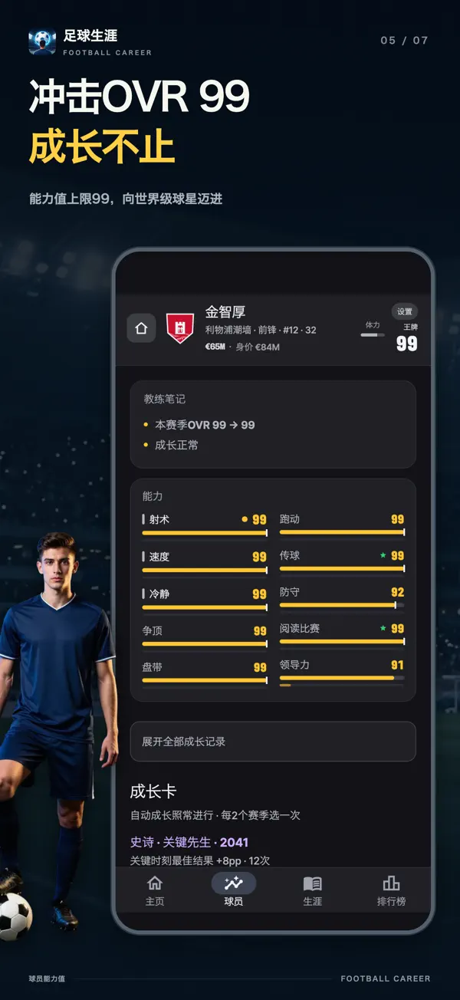
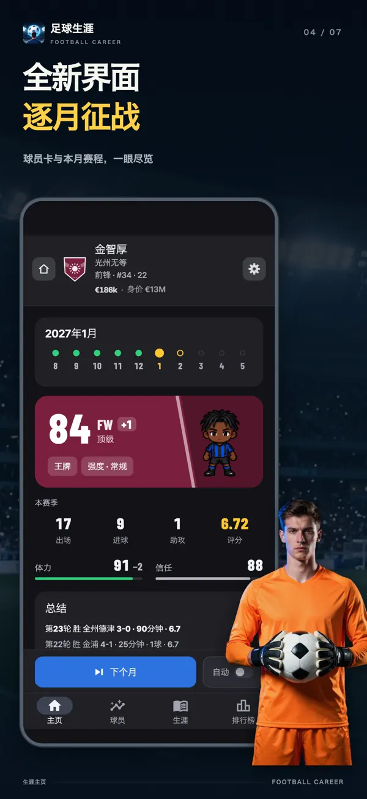
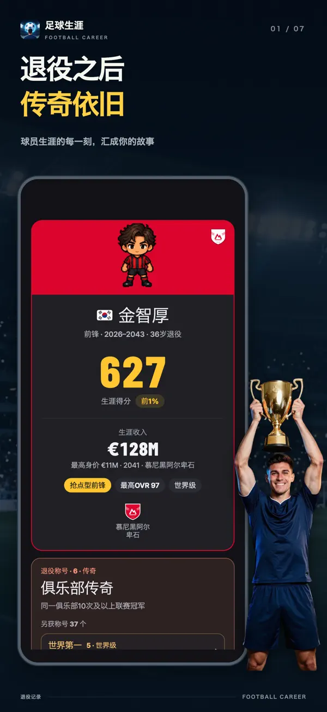
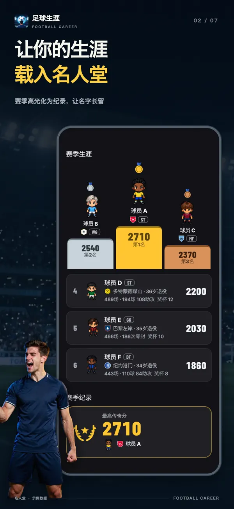
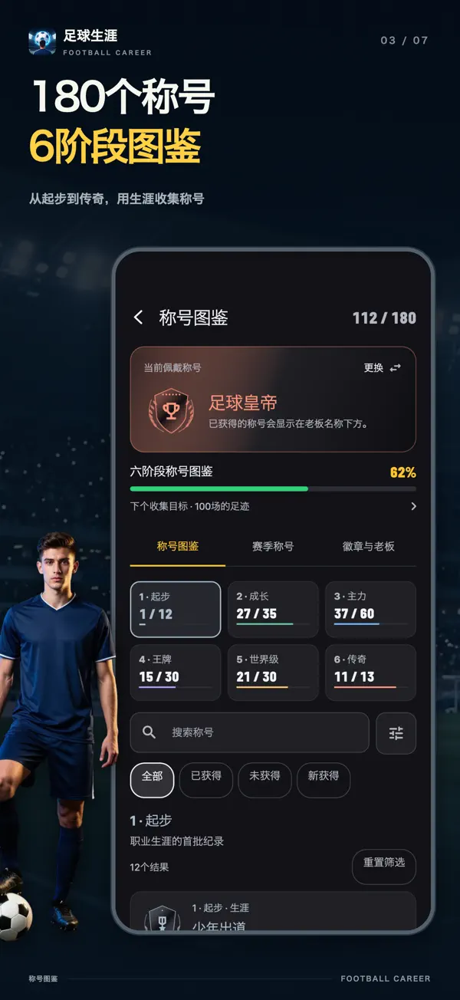
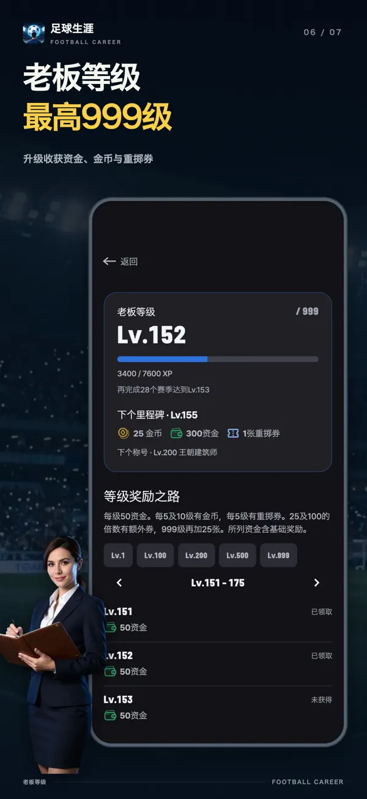
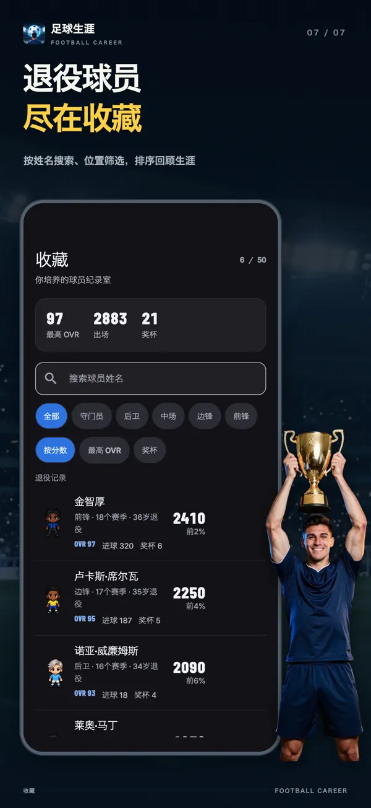

- YT Lab
- 綠茵人生：足球員養成模擬

綠茵人生 一張卡，改變整段生涯
在綠茵人生：足球員養成模擬中，每兩個賽季，你都能從三張同稀有度的成長卡中選擇一張。立即提升屬性、突破隱藏上限，還是達成條件換取豐厚回報？從17歲的青訓少年到退役，親手培養一名球員，走完他的足球人生。
選擇你的下一步成長
27歲 前鋒 OVR 96每張卡都能重抽一次，稀有度不變。
這裡使用的是真實的遊戲卡牌與計算規則，重現了27歲明星前鋒迎來最稀有的Legend輪次的時刻。重抽和下一輪抽卡的候選池、機率都與 App 一致，每次體驗都會從同一名球員開始。


每兩個賽季，三選一
屬性會隨著上場比賽自動成長，成長卡則讓你在此基礎上做出更多選擇。開局以及此後每兩個賽季，都會出現三張同稀有度、不同類別的卡，任選一張。稀有度越高，效果越強；首張卡必為史詩。
立即提升的卡
選中即提升屬性。「專注見效」帶來核心屬性+6、上限+3；「補齊短板」讓最低的核心屬性和輔助屬性各提升4。
突破上限的卡
每項屬性都有隱藏上限，自動成長到這裡就會停下。「一點天賦」「開啟潛力」和「潛力突破」能推高這道上限。卡牌最高可將上限提升至95。
達成條件才有回報的卡
「獵門者」每進5球，射術+1；「比賽之星」每獲2次MOM，屬性+2；「蓄勢待發」出場30次後，核心屬性+8。要在球場上兌現實力，才能拿到回報。
有得有失的卡
「爆發衝刺」帶來速度+8，代價是爭頂−3；「惡魔天賦」帶來核心屬性上限+12、屬性+10，代價是輔助屬性−3。有所得，也有所失。
延長生涯的卡
「第二個巔峰」讓三個賽季內的衰退減半，並延長兩年職業生涯。「最後的火焰」讓三項核心屬性+6，但你將在當賽季結束時退役。
免費重抽
不滿意的卡可以逐張重抽。稀有度保持不變，新卡類別也不會與另外兩張重複。
從替補席到世界年度最佳球員
你不會一開始就是頂級聯賽的主力。先從青訓隊、預備隊一路打拼，再從一線隊替補席爭取位置。更遠處，是每賽季評選全球最佳球員的世界年度最佳球員獎。能走多遠，取決於你選的卡和每個賽季的表現。
- 17歲
青訓隊
從17歲的青訓球員起步。擁有青訓起步包，即可從15歲開始。
- 19歲，最遲晉升年齡
預備隊
當實力接近一線隊，或年滿19歲時，就能升入預備隊。晉升在賽季結束時判定。
- 16–21各聯賽首秀年齡
從一線隊替補到主力
各聯賽的首秀年齡不同。年齡、屬性和賽季評分達到標準後，即可進入一線隊；上場時間則由主教練信任決定。
- 夏季賽季結束後
轉會與續約
主動申請轉會，或挑選收到的報價。與經紀人一起協商年薪、主力保證、解約金條款等合約內容。
- 18+一線隊球員
國家隊
18歲及以上的一線隊球員有機會獲得國家隊徵召。世界大賽與洲際大賽每兩年交替舉行。
- 36–41因位置而異
退役之後，留下什麼
預設情況下，邊鋒可踢到36歲，守門員可踢到41歲。卡牌和事件可以延長生涯，你也能選擇提前退役。
逐月征戰，在比賽中成長
一個賽季從8月到次年5月，共十個月、38場比賽。出場、進球、助攻、零封、MOM和評分都會轉化為當月成長，具體提升一目瞭然。你可以逐月推進，也可以讓月份自動流轉。
一個月的成長盤帶 57 → 58 +1
表現出色的月份，可以收穫月度最佳球員、月度最佳十一人，守門員還可爭取月度最佳撲救。獎項只看表現，沒有隱藏抽籤。賽季末，還能向最佳射手、賽季最佳陣容、年度最佳球員，乃至世界年度最佳球員發起衝擊。
遊戲畫面







這款足球遊戲有什麼不同
不當主教練，只做一名球員
沒有陣容管理、戰術板或轉會預算。上場時間由主教練決定；主教練更換後，青睞的球員類型也會改變。
機率，全部公開
賽季中遇到事件時，每個選項的三種結果都會提前顯示機率條和百分比。你還可以檢視屬性、主教練信任、狀態與成長卡分別如何影響這些數字。
不同聯賽，不同生涯
從英格蘭、西班牙、德國、義大利、法國，到韓國、日本、南美。各聯賽的首秀年齡、薪資和外援名額各不相同。所有聯賽、俱樂部、球員和主教練名稱均為虛構。
退役了，紀錄還在
退役後留下生涯數據，以及實力、效率、積累、獎項、冠軍、舞臺六個維度的評價。系統會與按遊戲規則模擬的兩萬段生涯比較，顯示你位於前百分之幾。已完成的生涯將進入周榜、月榜、總榜和賽季名人堂。
常見問題
- 遊戲免費嗎？
- 可以免費下載並玩到退役。成長卡和重抽也免費。去廣告、位置包、青訓起步包、支援包、金幣和重擲券均可自願購買。初始屬性無論透過免費、廣告還是重擲券抽取，機率都一樣。
- 沒有網路也能玩嗎？
- 生涯進度和存檔都儲存在裝置上，可以離線遊玩。排行榜、購買、金幣使用和裝置轉移需要聯網。
- 能在電腦或網頁上玩嗎？
- 這是面向iPhone、iPad和Android的應用，沒有可在瀏覽器遊玩的網頁版。本頁可體驗成長卡選擇。
- 可以選擇哪些位置？
- 守門員、後衛、中場、邊鋒和前鋒。守門員與前鋒免費開放，其餘三個位置透過位置包解鎖。每個位置都有七種踢法，共35種，全部免費。
- 能同時進行幾段生涯？
- 有三個生涯存檔位，可以同時培養三名球員。國籍決定初始聯賽和國家隊。
- 有真實的球員或俱樂部嗎？
- 沒有。遊戲中的聯賽、俱樂部、球員和主教練均為虛構。
- 我的名字會在排行榜公開嗎？
- 完成的生涯會進入排行榜，但你隨時可以關閉。自行修改的姓名只會在你同意後公開。
- 《綠茵人生》是什麼遊戲？
- 《綠茵人生》是一款足球員養成模擬遊戲。從17歲的青訓球員開始，透過成長卡、比賽、轉會與續約，培養球員直到退役。
- 台灣、香港可以下載嗎？
- 可以。台灣、香港玩家都可以在 App Store 和 Google Play 免費下載，遊戲內含可選購的商品。
- 可以離線玩嗎？
- 可以離線推進球員生涯，包括賽季、成長卡與轉會。排行榜、購買、錢包及更換裝置需要網路連線。